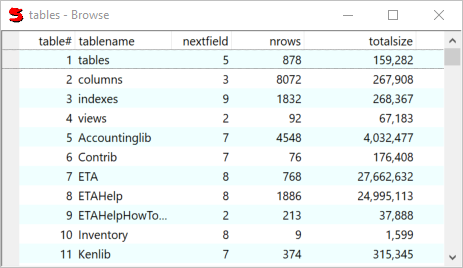

Browse
View or edit a table or query as a tabular list.

Use the following keys and mouse actions to control Browse:
- Use the INSERT key to insert a new row above the current row.
- Use the DELETE key to delete the currently selected row(s).
- Use F2 or double click to edit the current row.
- You can sort by a column by clicking on a column heading. To sort by multiple columns, click on them in reverse order. For example, to sort by city and then name, click on name first, and then city. Clicking a second time will sort the column in reverse order.
- Rearrange the order of columns by dragging the column headings.
- Change the width of a column by dragging the right hand end of the column heading.
The right click context menu contains: (Options are different for header and rows.)
- Edit Field - equivalent to F2 or double click
- New - insert a new row
- Delete/Undelete - toggle deleted status
- Restore - undo changes to a row
- Customize Columns...
- Customize...
- Print...
- Reporter...
- Summarize... e.g. count, total
- CrossTable...
- Save All - save changes
- Restore All - undo all changes
- Export...
- Reset Columns
Note: Currently, Browse reads the entire query into memory so it is not suitable for tables or queries with more than a few hundred records.
Note: Currently, Browse does not save your changes until the Browse window is closed. If you are using Browse to make extensive changes you may want to save periodically.
See also:
BrowseControl